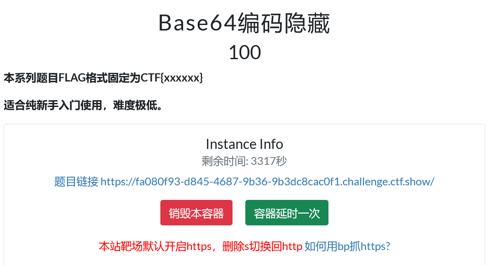

Base64编码隐藏

核心在于“隐藏”。
既然是“Base64编码隐藏”，Flag 通常不会直接显示在页面上，而是藏在网页的源代码里。
- 查看网页源代码：
在登录页面空白处点击鼠标右键，选择“查看网页源代码”（或者按键盘快捷键 `Ctrl + U）
- 寻找Base64字符串：
在密密麻麻的代码中，仔细寻找

核心在于“隐藏”。
既然是“Base64编码隐藏”，Flag 通常不会直接显示在页面上，而是藏在网页的源代码里。
在登录页面空白处点击鼠标右键，选择“查看网页源代码”（或者按键盘快捷键 `Ctrl + U）
在密密麻麻的代码中，仔细寻找